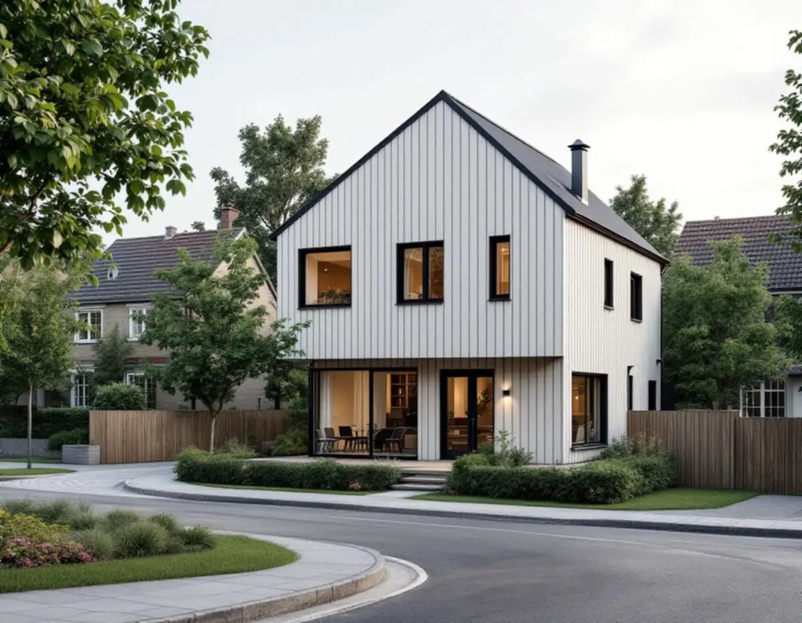
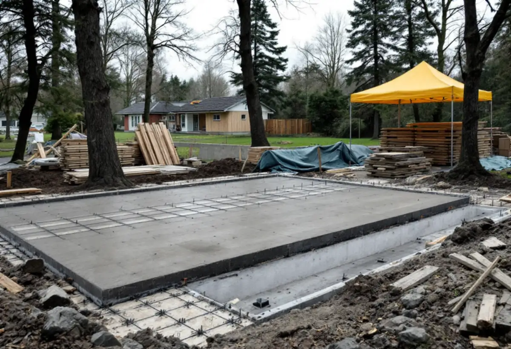
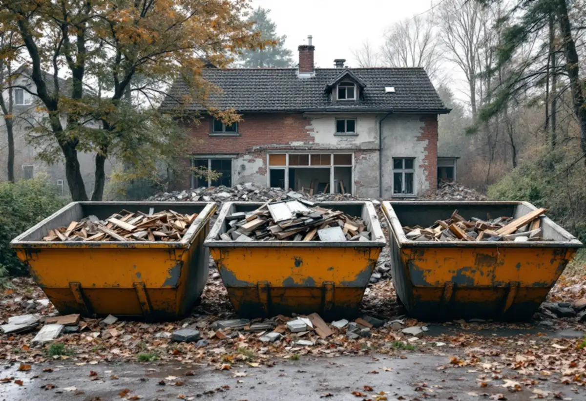

Platsbesök
Vi tittar på huset, tomten och detaljplanen.

I Spångas villastäder står hus från olika epoker sida vid sida, och ibland är det ett gammalt hus som ska ersättas med ett nytt.
Beskriv jobbet kort.
Något blev fel. Kontrollera uppgifterna eller ring 08 12 410 276.
Vi tittar på jobbet på plats innan du får offert.
Du ser vad som ingår och vad det kostar.
Vi drar av ROT direkt och sköter ansökan.
Geal Entreprenad AB, Bromma. Org.nr 559303-7566.

Geal Entreprenad AB bygger nya villor i Spånga som total entreprenad och tar hand om både rivningen och det nya huset.
Varsam utveckling av småhus- och villaområden berättar att små stationssamhällen uppstod när järnvägen byggdes ut, och att några på 1910-talet blev municipalsamhällen med egen administration och beskattningsrätt. Spånga är ett av exemplen. Solhem, Bromsten, Flysta och Sundby räknas som villastäder.
Villastäderna fick sina egna särdrag. I Solhem fanns stora tomter där endast en tiondel av tomten fick bebyggas. Enligt stadens områdesfakta fanns det 2024 i Solhem 1 946 bostäder i småhus med äganderätt, och i Bromsten 916.

Inom detaljplanerat område krävs rivningslov för att riva en byggnad eller en del av en byggnad. Staden gör då en sammantagen bedömning av om byggnaden bör bevaras utifrån dess historiska, kulturhistoriska, miljömässiga eller konstnärliga värde, och om rivningen stämmer med detaljplanen.
I vägledningens tabell är Solhem markerat som kulturhistoriskt värdefull miljö. Där kan bedömningen bli strängare, och det lönar sig att titta på Stadsmuseets karta och detaljplanen innan man köper ett hus för att riva det.
När en byggnad ska rivas behöver du ta fram en materialinventering som visar vilka material som finns och redovisar miljöfarligt avfall. Inventeringen ska göras innan rivningen påbörjas, och dokumentationen skickas in.
Rivningen får också en kontrollplan som beskriver vilka kontroller som ska göras och av vem. Vi tar fram inventeringen, sorterar avfallet och lämnar underlaget till kommunen, så att rivningen kan börja när startbeskedet finns.
Ett nytt hus kräver bygglov. Redan när du söker ska det finnas ett förslag på kontrollansvarig, och den kontrollansvariga ska ha åtagit sig uppdraget. Situationsplanen ritas på en nybyggnadskarta, som visar fastighet, markhöjder, planbestämmelser och anslutningar för vatten och avlopp.
Vägledningen för villastäderna säger att nya byggnader ska utformas inom befintlig struktur, utifrån en samtida tolkning av platsens förutsättningar och den närliggande bebyggelsen. Den råder också att undvika fler utfarter intill varandra och att hårdgöra grönytor, så placeringen av infart och parkering hör till de första frågorna. Befintliga träd och höjdskillnader på tomten påverkar också var huset kan stå.
Varsam beskriver hur villastäderna har förtätats genom att tomter successivt delats. Tillkommande hus på tomter kring 600 kvadratmeter har kompletterat eller ersatt den äldre bebyggelsen, och på 1960- och 70-talen ersattes många villor i villastäderna av grupper av enhetliga småhus.
Den som river ett hus i dag bygger alltså i en miljö som redan har flera årsringar. Det nya huset prövas mot detaljplanen och mot omgivningen, och vägledningen lyfter material, färgsättning, volym och takform som aspekter med stor påverkan på områdets karaktär.
Den som söker bygglov för en ny byggnad kan behöva lämna en klimatdeklaration inför slutbeskedet. Staden listar undantag, och två av dem gäller ofta villor: byggnaden är inte större än 100 kvadratmeter bruttoarea, eller byggherren är en privatperson som uppför byggnaden privat.
Det är vid det tekniska samrådet som staden tar ställning till om byggnaden omfattas. Om tillbyggnad i stället för nytt hus kan du läsa under byggfirma, och om att renovera det befintliga huset under totalrenovering i Spånga.
Vi tittar på huset, tomten och detaljplanen.
Ansökningarna tas fram med ritningar och nybyggnadskarta.
Förslag på kontrollansvarig finns med redan i ansökan.
Rivning, grund, stomme och invändigt står för sig.
Materialinventering först, sedan rivning och det nya huset.
Vi samlar intyg och kontrollplan inför inflyttningen.
Skatteverket ger inget rotavdrag för att bygga ett nytt hus. Avdraget gäller reparation, underhåll samt om- och tillbyggnad av en befintlig bostad.
Väljer du att bygga om och bygga till det befintliga huset i stället kan arbetet ge rotavdrag. Rotavdraget är 30 procent av arbetskostnaden, högst 50 000 kronor per person och år och högst 75 000 kronor tillsammans med rutavdrag. Material och resor ger inget avdrag, och du ska äga bostaden när arbetet utförs.
Husets storlek, grundläggningen på tomten, rivningen och om miljöfarligt avfall behöver saneras. Efter ett gratis platsbesök får du ett skriftligt kostnadsförslag.
Total entreprenad för villan.
Byggfirma →Takbyte, takbesiktning och plåtarbeten.
Takläggare i Spånga →Solhem, Bromsten, Flysta och Sundby.
Takrenovering i Spånga →Solhem, spåren och de stora tomterna.
Attefallshus i Spånga →Äldre villor, duschplats och bostadsanpassning.
Badrumsrenovering i Spånga →Bättra eller måla om hela villan.
Fasadmålning i Spånga →Trävillor och gruppbyggda radhus.
Fasadrenovering i Spånga →Villor, verandor och nya öppningar.
Fönsterbyte i Spånga →Villorna i Solhem.
Fönsterrenovering i Spånga →Massivt, lamell, fanér eller laminat.
Golvläggare i Spånga →Breda originalgolv och patina.
Golvslipning i Spånga →Solhem, villastäder och kök i flera lager.
Köksrenovering i Spånga →Solhems färgskala och villorna kring stationen.
Målare i Spånga →Villatak, rännor och stuprör.
Plåtslagare i Spånga →Väggar, vindar och verandor i villastäderna.
Snickare i Spånga →Solceller, radarn och Solhem.
Takbyte i Spånga →Tapet som passar husets tid.
Tapetsering i Spånga →Villastäderna, tomterna och gatan.
Tillbyggnad i Spånga →Villastäderna, stommen och ventilationen.
Totalrenovering i Spånga →Eller ring 08 12 410 276, mån–fre 08–17.
Beskriv jobbet kort.
Något blev fel. Kontrollera uppgifterna eller ring 08 12 410 276.